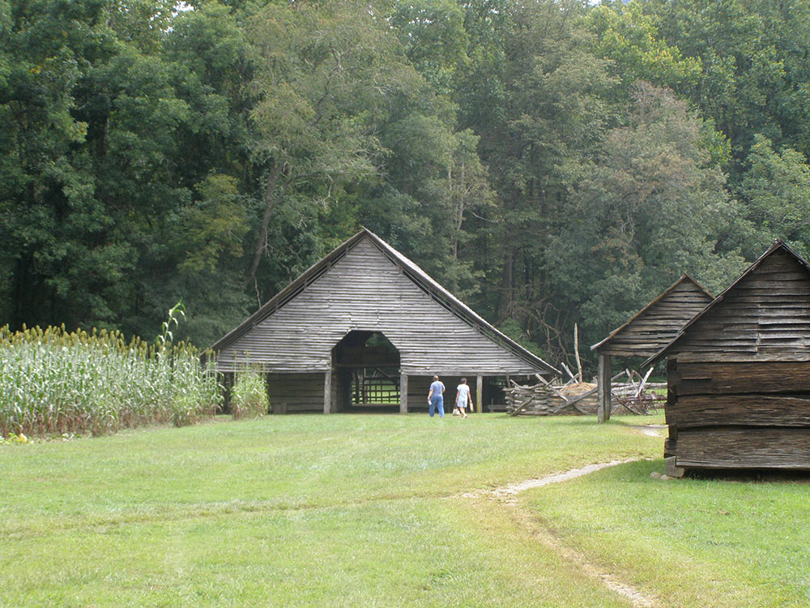
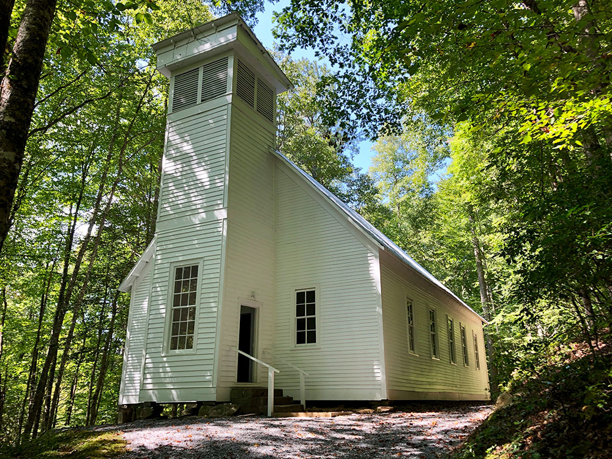

.jpg){kind=link}
Visitor center and cultural area featuring historic farm structures, museum exhibits, wildlife viewing opportunities, and access to riverside walking trails.
General Information
Visitor center hours vary seasonally, typically 9:00am to 5:00pm
Public restrooms available
Great Smoky Mountains National Park parking tag required for vehicles parked longer than 15 minutes
How to Get There
From Cherokee, NC (2 mi): Take US-441 N from downtown Cherokee and continue approximately 2 miles to the Oconaluftee Visitor Center at the southern entrance of Great Smoky Mountains National Park.
Overview
Oconaluftee Archeological District is within the eponymous river valley in the Great Smoky Mountains of North Carolina. Formerly a historic Cherokee village, followed by an Appalachian community, were located at this site along the Oconaluftee River. Now the site serves as the main entrance to the North Carolina side of the Great Smoky Mountains National Park.
The Oconaluftee area parallels the Oconaluftee River as its basin gradually broadens from Smokemont in the north to the southern tip of the Qualla Boundary. The Qualla Boundary, commonly known as Cherokee, North Carolina, comprises the bulk of a federal trust that serves as a reservation for the federally recognized tribe, Eastern Band of the Cherokee.
The Oconaluftee Visitor Center, Mingus Mill, and the Mountain Farm Museum are all located in this area. Most is part of the Oconaluftee Archaeological District, which was listed on the National Register of Historic Places in 1982.
Near Newfound Gap, several small creeks converge to form Beech Flats Prong. This stream flows south along the southern base of Mount Kephart, dropping 2,000 feet (600 m) over 10 miles (16 km) before merging with Kephart Prong, Kanati Fork, and Smith Branch to form the Oconaluftee River. The Oconaluftee continues southward, cutting a valley between the Richland Mountain massif to the east and the Thomas Ridge massif to west. The confluence of the Oconaluftee River and Bradley Fork at Smokemont strengthens the river considerably, with the has broadened from this point.
Near the park boundary, a large and relatively flat bottomland has been created by the river's junction with Raven Fork, which flows down from the northeast. Past Cherokee, the river turns west en route to its mouth along the Tuckasegee River, near Bryson City.
The rock formation underlying the area around the Oconaluftee-Raven Fork junction contains some of the oldest exposed rocks in the Eastern United States. This formation, which is composed primarily of an Early Precambrian basement rock known as granite gneiss, was formed over a billion years ago from the gradual accumulation of marine sediment and igneous rocks.
The upper elevations of the Oconaluftee Valley are underlain by a Late Precambrian metamorphic rock of the Ocoee Supergroup, which is the dominant rock class in the Great Smokies. These rocks were formed from ocean sediments nearly 400 million years ago, and were thrust upward during the Appalachian orogeny, when the North American and African plates collided.
The Greenbrier Fault, which crosses the Oconaluftee River between Tow String Creek and Mingus Creek, divides the basement formation from the Late Precambrian formation. Exposures of both rock formations can be seen along U.S. Route 441 between Newfound Gap and Cherokee.
The term "Oconaluftee" comes from the Cherokee village name Egwanulti, which means "by the river". it was recorded by naturalist John Bartram in his journals of 1775. The location of the village was unknown, although early although anthropologist James Mooney believed it to be situated near modern Birdtown, between Cherokee and Bryson City.
An archaeological survey and its evidence, however, has identified a Cherokee settlement along the Oconaluftee north of the Qualla Boundary and just inside the present-day national park. While the Cherokee ranged widely over the Smokies, this is the only known permanent Cherokee settlement within the park boundaries. This village was likely destroyed in 1776 by the army of General Griffith Rutherford during the American Revolution.
John Jacob Mingus (ca. 1774-1852), who arrived in the Oconaluftee in the 1790s, was the first Euro-American settler in the valley and the first within the boundaries of what is now the Great Smoky Mountains National Park. Mingus purchased the land from Felix Walker, a land speculator and later North Carolina Congressman. While Mingus roamed from county to county in the Southern Appalachians, his descendants would remain in the area until the establishment of the park.
Mingus was followed by Abraham Enloe (1770-1840), who settled downstream from the Mingus plot. Due to Enloe's resemblance to Abraham Lincoln, many locals believed he was the president's father. Later Euro-American arrivals included Isaac Bradley (1772-1855), whose family settled in the vicinity of the stream that now bears their name, and Aden Carver (1844-1945), who lived near Smokemont.
In 1831, Enloe entered into a partnership with William Holland Thomas (1805-1893) to form the Oconaluftee Turnpike Company. The company widened the Indian Gap Trail from Oconaluftee to the crest of the Smokies, allowing wagon access to saltpeter mines on Mount Le Conte. The road's first tollkeeper, Robert Collins, would later guide Arnold Guyot on surveying expeditions across the crest of the Smokies. Mount Collins, between Clingmans Dome and Newfound Gap, is named for him.
Thomas, the son of caucasian parents who was adopted by Cherokee peace chief Yonaguska, took control of Cherokee business affairs in the 1830s. His land purchases for the tribe included the Qualla Boundary, which became the backbone of the federal trust for the Eastern Band of the Cherokee. After the 1835 Treaty of New Echota ordered the Cherokees' removal from all eastern lands, Thomas went to Washington and successfully argued that since the Oconaluftee Cherokees were North Carolina citizens, the treaty didn't apply to them. In 1868, the Eastern Band was recognized as a separate tribe.
In the late 19th-century, innovations in the band saw and logging railroad led to a logging boom in Southern Appalachia. With base camps at Smokemont, the Three M Lumber Company and later the Champion Fibre Company cut much of the Oconaluftee valley before its tract was bought out by the Great Smoky Mountains Park Commission in the 1930s. In 1925, a massive forest fire quickly swept across the dried brush left over from the extensive logging, scorching much of the southern slopes of the Smokies.
After the establishment of the national park, a Civilian Conservation Corps camp was set up at Smokemont for workers to construct roads and trails in the area. In 1937, the CCC restored Mingus Mill, a large turbine-driven gristmill on Mingus Creek. In the 1950s, several log structures were moved to an area adjacent to the Oconaluftee Visitor Center to form the Mountain Farm Museum, which provides an exhibition of pioneer European-American life in Appalachia.
Along with the historic sites in the vicinity of the Oconaluftee Visitor Center, the park service maintains a large campground at the former logging camp of Smokemont. The small mountain hamlet of Tow String is sandwiched between the national park and Qualla Boundary, just above Oconaluftee. The southern terminus of the Blue Ridge Parkway is at the valley's southern tip, near the river's confluence with Raven Fork.
A 20-mile (32 km) leg of the Mountains-to-Sea Trail connects Oconaluftee with the Appalachian Trail near the summit of Clingmans Dome. The Bradley Fork Trail follows Bradley Fork north from Smokemont to the Cabin Flats area between Hughes Ridge and Richland Mountain. From here, the Dry Sluice Gap Trail continues north to the crest of the Smokies, emerging near Charlies Bunion.
In 1982, the Oconaluftee area was added to the National Register of Historic Places as the Oconaluftee Archaeological District.
Mingus Mill was built in 1886 by the millwright Sion Thomas Early of Sevier County, Tennessee. Early did the work for John Mingus, a son of John Jacob Mingus. Early completed the mill in three months for a cost of $600. The mill operated at wholesale and retail levels until the National Park Service purchased the property in 1934. The mill was restored in 1937, closed during World War II, and reopened in 1968.
Water diverted from Mingus Creek via a sluice (canal) and a wooden flume turns two turbines which provide power to the mill. An iron shaft connects the turbines to grindstones on the first floor and a wheat cleaner and bolting chest on the second floor (the latter two via a series of pulleys). Wheat or corn is first transported by bucket belt to the wheat cleaner, which is essentially a fan which clears the grain of dirt and excess material, and then drops it back to the first floor. The cleaned grain is then fed into the grindstones, which break it down into flour (or cornmeal). The flour is then transported back to the second floor and fed into the bolting chest, which uses bolts of progressively coarser cloth to separate the flour into different grades.
While the mill's turbine is not as photogenic as the overshot wheels that power mills such as the Cable Mill at Cades Cove, it was more efficient and required less water power to operate. The turbine generated approximately 11 horsepower (8.2 kW) turning at 400 rpm.
Aden Carver, who arrived in Oconaluftee in the mid-19th century, helped Early build the mill in 1886. When the mill was restored in 1937, Carver, then in his 90s, aided in its restoration.
The original visitor center at Oconaluftee was built in 1940 by the Civilian Conservation Corps (CCC) as a ranger station and magistrate's courtroom. The stone-and-log cabin was designated a "temporary" visitor center in 1947, and stayed that way until 2011, when a brand-new center was built in just two months in late winter and early spring, and dedicated on April 15. The Great Smoky Mountains Association paid three million dollars for the buildings (the other being a highly efficient restroom facility between it and the original center), and Friends of the Smokies donated over half a million more for the exhibits inside. Trotter & Associates Architects, LLC was the architect of record for the new visitor center. No government or taxpayer money was allocated for the project, so construction costs had to come entirely from donations to the two groups, which in turn donated the center to the National Park Service. The center and restrooms are open year-round, and after 64 years of "temporary" use, the original building has finally been reverted to its original administrative use, though its rustic and historic "parkitecture" remains untouched on the outside.
Just to the south on U.S. 441 is the southern end of the Blue Ridge Parkway, which unlike GSMNP and 441, is normally closed in winter.
Adjacent to the Oconaluftee Visitor Center is the Mountain Farm Museum. The museum is a collection of several log buildings from various places around the park, the purpose of which is to depict a typical mountain farm in pioneer Appalachia. Gardens are planted during the spring and summer, and barn fowl roam the premises. Since most of the structures were not moved from their original locations intact, they are not eligible for inclusion in the National Register of Historic Places. The park service maintains them by the same standards, however.
John Davis Cabin, built in 1900. This cabin was originally located on Indian Creek several miles to the west above Bryson City. John Davis moved to the area in 1885 to free-range his livestock. The cabin was constructed with matched chestnut logs joined with dove-tail notches.
Enloe Barn, built around 1880 by Abraham Enloe's grandson, Joseph, who owned the land where the museum is now located. The Enloes sold their farm to the Floyd family in 1917. This relatively large barn housed livestock in its lower stalls and grain and fodder in its lofts. This is the only structure that was originally located in Oconaluftee, being moved only 200 yards (180 m) from its native spot. The roof consists of over 16,000 hand-split shingles.
Messer Applehouse, built by Will Messer of Cataloochee, a valley located within the park on the other side of Cataloochee Mountain to the east. At its original location, the applehouse was partially underground to help insulate it from the summer heat and winter cold.
The meathouse, located just behind the cabin, was moved to the site from Cataloochee. To cure meat (usually pork) and give it flavor, a small fire was built just inside the meathouse, exposing the meat to several hours of smoke.
The Baxter/Jenkins Chickenhouse, built by Willis Baxter in the late 19th century, was originally located at the base of Maddron Bald between Greenbrier and Cosby, Tennessee. Baxter's cabin is still located at its original site. Chickenhouses were used to protect chickens from carnivorous animals.
The blacksmith shop was built around 1900 and moved to the site from Cades Cove.
The blacksmith shop was built around 1900 and moved to the site from Cades Cove.
The springhouse, moved from Cataloochee, was used by farmers for refrigeration.
Two corn cribs, built around 1900, were moved from Thomas Divide, just north of Bryson City. Corn crib roofs were often raised to place the recently cut corn crop inside. A large pitchfork was used to remove the corn via the small square doors when it was time to take the corn to the mill.
Other buildings include a hog pen, a sorghum press and still (used to draw sorghum from cane and boil it into syrup), an ash hopper (water was filtered through the ashes to extract its lye, which was then mixed with hog lard to make soap), a woodshed, and native fencing.
The Oconaluftee Indian Village is operated by the Cherokee Historical Association on the slopes of Rattlesnake Mountain inside the reservation. The outdoor museum is a replica of a typical Cherokee village from the mid-18th century.
This article uses material from the Wikipedia article "Oconaluftee (Great Smoky Mountains)", which is released under the Creative Commons Attribution-Share-Alike License 3.0



_Baptist_Church,_Cherokee,_NC.jpg){kind=link}